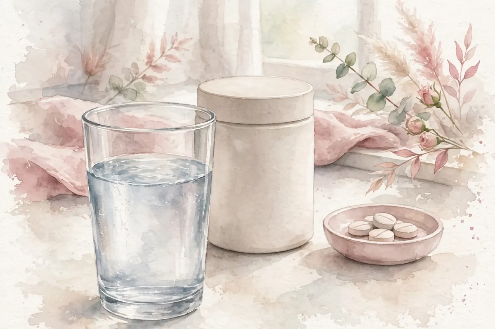
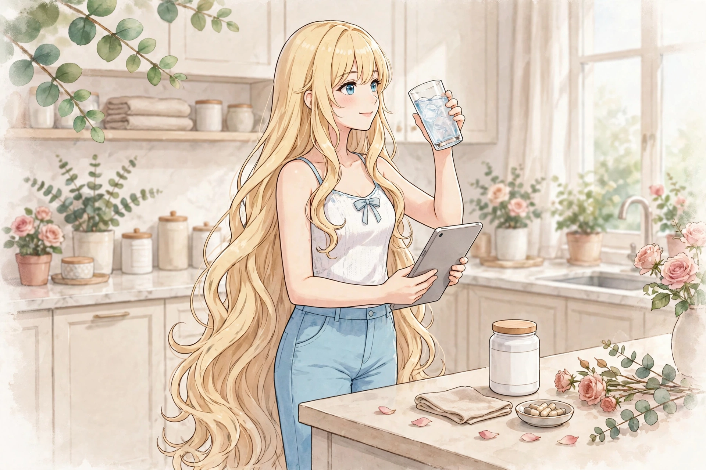

トップ ＞ インナーケア・サプリ ＞ 水と一緒に飲む量の目安と飲み忘れ対策
水と一緒に飲む量の目安と飲み忘れ対策

サプリメントの表示には「水またはぬるま湯と一緒に」という案内が書かれていることが多いです。では、水はどれくらい用意すればいいのか。そして、毎日続ける中で避けられない「飲み忘れ」をどう防ぐか。この記事では、この2点を整理します。
水の量は、コップ1杯が目安と案内されることが多い
一般的な案内では、コップ1杯（200mL前後）の水と一緒に飲む、とされることが多いです。ただし、商品ごとに表示の案内がある場合は、そちらが優先です。粒の数や形状によっても、飲むときの感覚は変わります。少量の水で急いで飲むより、コップ1杯を用意して、落ち着いて飲む方が手順として安定します。
飲むものについても、お茶やジュースではなく水が基本と案内されることが多いです。何と一緒に飲むかについて、商品の表示や販売ページに注意書きがある場合は、その案内を確認してください。
飲み忘れは「置き場所」と「合図」で防ぐ
飲み忘れの対策は、気合いよりも仕組みです。食卓の自分の席の前、朝食の食器のそばなど、「必ず目に入る場所」に置くのが基本です。飲むタイミングを「朝食の後」のように食事の流れに結びつけておくと、食事そのものが合図になります。
1週間分のピルケースに小分けしておく方法もあります。飲んだかどうかが目で見て分かるので、二重に飲む心配も減ります。ただし、小分けにするときは、元のパッケージの表示（賞味期限や注意書き）が手元に残るようにしておくことが大切です。
外出先の分は、前日に分けておく
昼に飲む分がある場合は、前日の夜にケースへ分けておくと、朝の忙しさの中で忘れにくくなります。旅行の分も同じで、日数分を小分けにし、元のパッケージは写真に撮っておくと、表示を確認したいときに役立ちます。
水の温度についても触れておきます。冷たい水が苦手な方は、常温の水やぬるま湯にするなど、表示の案内の範囲で自分の飲みやすい形を選んで構いません。大切なのは、無理なく毎日続けられる形にすることです。また、粒を口に含んでから水を用意すると、口の中に不快な感じが残ることがあります。先にコップの水を用意してから粒を手に取る、という順番を決めておくと、手順が安定します。小さな順番の工夫ですが、毎日のことなので積み重なります。ペットボトルを持ち歩く方は、その日の分を飲むための水もあわせて用意しておくと安心です。
サプリメントは食品であり、身体への作用を断定するものではありません。飲み方について商品の表示と異なる案内を受けた場合や、体調に不安がある場合は、医師・薬剤師等の専門家にご相談ください。

セラフィナ「水はコップ1杯が目安、飲み忘れは置き場所の工夫で防ぐ。それが続ける仕組みだね」